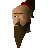
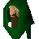
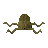

Fishing Platform
Location at 2775, 3287 · Kingdom of Kandarin
Open on the world map → Open in knowledge graph → Below: Fishing Platform (underground)
NPCs
| NPC | Level | Spawns | Notable drops |
|---|---|---|---|
| 32 | 2 | ||
| 28 | 4 | Limpwurt root, Coins, Herb drop table, Bronze spear | |
| 22 | 2 | Coins, Herb drop table, Iron med helm, Bronze bar | |
 Bailey | 1 | ||
| 1 | |||
| 1 | |||
| 5 | |||
| 4 | |||
| 3 | |||
| 4 | |||
| shop | 1 | ||
| 1 | |||
| 1 | |||
 Holgart | 1 | ||
| 1 | |||
| 1 | |||
| 1 | |||
 Sea slug | 26 |